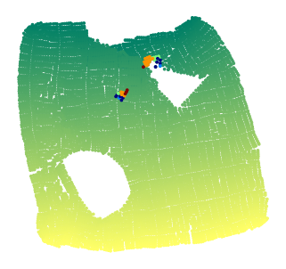

Doubled square with two holes
[ ]:
%matplotlib inline
[2]:
# Not really required
import sys
sys.path.insert(0, '../../..')
[3]:
from pyLDLE2 import datasets
from pyLDLE2 import ldle_
matplotlib.get_backend() = module://matplotlib_inline.backend_inline
[4]:
save_dir_root = '../data/pyLDLE2/doubled_squarewithtwoholes/'
[5]:
X, labelsMat, ddX = datasets.Datasets().squarewithtwoholes()
X.shape = (9169, 2)
[6]:
# The supplied options would override the default options
ldle = ldle_.LDLE(local_opts={'algo':'LDLE'},
vis_opts={'c': labelsMat[:,0], 'save_dir': save_dir_root},
intermed_opts={'eta_min': 10},
global_opts={
'max_iter': 12,
'init_algo_align_w_parent_only': False # Set this True for low noise
},
verbose=True, debug=True)
local_opts['k_nn0'] = 600 is created.
[7]:
ldle.fit(X=X, ddX=ddX)
Doubling manifold.
No. of points on the boundary = 540
/Users/dhkohli/opt/anaconda3/lib/python3.8/site-packages/sklearn/neighbors/_base.py:199: EfficiencyWarning: Precomputed sparse input was not sorted by data.
warnings.warn(
Done.
##############################
Time elapsed from last time log: 49.7 seconds
Total time elapsed: 49.7 seconds
##############################
Constructing unnorm graph Laplacian + its eigendecomposition.
Done.
##############################
Time elapsed from last time log: 11.1 seconds
Total time elapsed: 11.1 seconds
##############################
Computing Atilde: Inner Prod of Grad of EigFuncs.
FEM for Atilde.
Atilde: 0 points processed...
Atilde: 4449 points processed...
Atilde: 8898 points processed...
Atilde: 13347 points processed...
Atilde: 17796 points processed...
Atilde: all points processed...
Done.
##############################
Time elapsed from last time log: 1.3 seconds
Total time elapsed: 12.4 seconds
##############################
Computing LDLE.
local_param: all 17798 points processed...
max distortion is 47043.183360
Done.
##############################
Time elapsed from last time log: 3.5 seconds
Total time elapsed: 15.9 seconds
##############################
Posprocessing LDLE.
Iter 1, Param replaced: 16844, max distortion: 21.552712
Iter 2, Param replaced: 8771, max distortion: 14.829681
Iter 3, Param replaced: 3463, max distortion: 14.829681
Iter 4, Param replaced: 1280, max distortion: 14.829681
Iter 5, Param replaced: 401, max distortion: 14.829681
Iter 6, Param replaced: 153, max distortion: 14.829681
Iter 7, Param replaced: 49, max distortion: 14.829681
Iter 8, Param replaced: 15, max distortion: 14.829681
Iter 9, Param replaced: 2, max distortion: 14.829681
Iter 10, Param replaced: 0, max distortion: 14.829681
Done.
##############################
Time elapsed from last time log: 42.4 seconds
Total time elapsed: 58.3 seconds
##############################
Halving objects.
Done.
##############################
Time elapsed from last time log: 4.0 seconds
Total time elapsed: 67.6 seconds
##############################
Max local distortion = 8.93279798770453
Constructing intermediate views.
eta = 2.
# non-empty views with sz < 2 = 9169
#nodes in views with sz < 2 = 9169
Costs computed when eta = 2.
##############################
Time elapsed from last time log: 13.2 seconds
Total time elapsed: 13.3 seconds
##############################
Remaining #nodes in views with sz < 2 = 0
Done with eta = 2.
##############################
Time elapsed from last time log: 63.7 seconds
Total time elapsed: 77.0 seconds
##############################
eta = 3.
# non-empty views with sz < 3 = 329
#nodes in views with sz < 3 = 658
Costs computed when eta = 3.
##############################
Time elapsed from last time log: 0.4 seconds
Total time elapsed: 77.4 seconds
##############################
Remaining #nodes in views with sz < 3 = 0
Done with eta = 3.
##############################
Time elapsed from last time log: 1.6 seconds
Total time elapsed: 79.0 seconds
##############################
eta = 4.
# non-empty views with sz < 4 = 335
#nodes in views with sz < 4 = 1005
Costs computed when eta = 4.
##############################
Time elapsed from last time log: 0.6 seconds
Total time elapsed: 79.6 seconds
##############################
Remaining #nodes in views with sz < 4 = 0
Done with eta = 4.
##############################
Time elapsed from last time log: 4.6 seconds
Total time elapsed: 84.2 seconds
##############################
eta = 5.
# non-empty views with sz < 5 = 249
#nodes in views with sz < 5 = 996
Costs computed when eta = 5.
##############################
Time elapsed from last time log: 0.6 seconds
Total time elapsed: 84.9 seconds
##############################
Remaining #nodes in views with sz < 5 = 0
Done with eta = 5.
##############################
Time elapsed from last time log: 6.1 seconds
Total time elapsed: 91.0 seconds
##############################
eta = 6.
# non-empty views with sz < 6 = 170
#nodes in views with sz < 6 = 850
Costs computed when eta = 6.
##############################
Time elapsed from last time log: 0.5 seconds
Total time elapsed: 91.5 seconds
##############################
Remaining #nodes in views with sz < 6 = 0
Done with eta = 6.
##############################
Time elapsed from last time log: 5.3 seconds
Total time elapsed: 96.8 seconds
##############################
eta = 7.
# non-empty views with sz < 7 = 134
#nodes in views with sz < 7 = 804
Costs computed when eta = 7.
##############################
Time elapsed from last time log: 0.5 seconds
Total time elapsed: 97.3 seconds
##############################
Remaining #nodes in views with sz < 7 = 0
Done with eta = 7.
##############################
Time elapsed from last time log: 5.7 seconds
Total time elapsed: 102.9 seconds
##############################
eta = 8.
# non-empty views with sz < 8 = 102
#nodes in views with sz < 8 = 714
Costs computed when eta = 8.
##############################
Time elapsed from last time log: 0.4 seconds
Total time elapsed: 103.3 seconds
##############################
Remaining #nodes in views with sz < 8 = 0
Done with eta = 8.
##############################
Time elapsed from last time log: 5.0 seconds
Total time elapsed: 108.3 seconds
##############################
eta = 9.
# non-empty views with sz < 9 = 95
#nodes in views with sz < 9 = 760
Costs computed when eta = 9.
##############################
Time elapsed from last time log: 0.4 seconds
Total time elapsed: 108.7 seconds
##############################
Remaining #nodes in views with sz < 9 = 0
Done with eta = 9.
##############################
Time elapsed from last time log: 6.0 seconds
Total time elapsed: 114.7 seconds
##############################
eta = 10.
# non-empty views with sz < 10 = 67
#nodes in views with sz < 10 = 603
Costs computed when eta = 10.
##############################
Time elapsed from last time log: 0.3 seconds
Total time elapsed: 115.0 seconds
##############################
Remaining #nodes in views with sz < 10 = 0
Done with eta = 10.
##############################
Time elapsed from last time log: 4.8 seconds
Total time elapsed: 119.8 seconds
##############################
Pruning and cleaning up.
Done.
##############################
Time elapsed from last time log: 0.3 seconds
Total time elapsed: 120.1 seconds
##############################
After clustering, max distortion is 15.169483
Ambiguous overlaps checked for 0 intermediate views
Ambiguous overlaps checked for 146 intermediate views
Ambiguous overlaps checked for 292 intermediate views
Ambiguous overlaps checked for 438 intermediate views
Ambiguous overlaps checked for 584 intermediate views
Ambiguous overlaps checked for 586 points
Seq of intermediate views and their predecessors computed.
No. of connected components = 1
Computing initial embedding using: sequential algorithm
##############################
Time elapsed from last time log: 1.4 seconds
Total time elapsed: 1.4 seconds
##############################
Initial alignment of 146 views completed
Initial alignment of 292 views completed
Initial alignment of 438 views completed
Initial alignment of 584 views completed
Embedding initialized.
##############################
Time elapsed from last time log: 1.1 seconds
Total time elapsed: 2.5 seconds
##############################

Refining with retraction algorithm for 100 iterations.
Refinement iteration: 0
##############################
Time elapsed from last time log: 0.0 seconds
Total time elapsed: 7.5 seconds
##############################
Computing Pseudoinverse of a matrix of L of size 9755
Descent starts
Done.
##############################
Time elapsed from last time log: 17.7 seconds
Total time elapsed: 25.1 seconds
##############################

Refining with retraction algorithm for 100 iterations.
Refinement iteration: 1
##############################
Time elapsed from last time log: 0.0 seconds
Total time elapsed: 27.8 seconds
##############################
Computing Pseudoinverse of a matrix of L of size 9755
Descent starts
Done.
##############################
Time elapsed from last time log: 17.5 seconds
Total time elapsed: 45.4 seconds
##############################

Refining with retraction algorithm for 100 iterations.
Refinement iteration: 2
##############################
Time elapsed from last time log: 0.0 seconds
Total time elapsed: 48.2 seconds
##############################
Computing Pseudoinverse of a matrix of L of size 9755
Descent starts
Done.
##############################
Time elapsed from last time log: 17.4 seconds
Total time elapsed: 65.5 seconds
##############################
Refining with retraction algorithm for 100 iterations.
Refinement iteration: 3
##############################
Time elapsed from last time log: 0.0 seconds
Total time elapsed: 68.1 seconds
##############################
Computing Pseudoinverse of a matrix of L of size 9755
Descent starts
Done.
##############################
Time elapsed from last time log: 17.3 seconds
Total time elapsed: 85.5 seconds
##############################
Refining with retraction algorithm for 100 iterations.
Refinement iteration: 4
##############################
Time elapsed from last time log: 0.0 seconds
Total time elapsed: 88.1 seconds
##############################
Computing Pseudoinverse of a matrix of L of size 9755
Descent starts
Done.
##############################
Time elapsed from last time log: 16.9 seconds
Total time elapsed: 105.0 seconds
##############################

Refining with retraction algorithm for 100 iterations.
Refinement iteration: 5
##############################
Time elapsed from last time log: 0.0 seconds
Total time elapsed: 107.6 seconds
##############################
Computing Pseudoinverse of a matrix of L of size 9755
Descent starts
Done.
##############################
Time elapsed from last time log: 18.8 seconds
Total time elapsed: 126.4 seconds
##############################

Refining with retraction algorithm for 100 iterations.
Refinement iteration: 6
##############################
Time elapsed from last time log: 0.0 seconds
Total time elapsed: 129.0 seconds
##############################
Computing Pseudoinverse of a matrix of L of size 9755
Descent starts
Done.
##############################
Time elapsed from last time log: 17.4 seconds
Total time elapsed: 146.4 seconds
##############################

Refining with retraction algorithm for 100 iterations.
Refinement iteration: 7
##############################
Time elapsed from last time log: 0.0 seconds
Total time elapsed: 149.0 seconds
##############################
Computing Pseudoinverse of a matrix of L of size 9755
Descent starts
Done.
##############################
Time elapsed from last time log: 17.5 seconds
Total time elapsed: 166.5 seconds
##############################
Refining with retraction algorithm for 100 iterations.
Refinement iteration: 8
##############################
Time elapsed from last time log: 0.0 seconds
Total time elapsed: 169.2 seconds
##############################
Computing Pseudoinverse of a matrix of L of size 9755
Descent starts
Done.
##############################
Time elapsed from last time log: 19.1 seconds
Total time elapsed: 188.2 seconds
##############################

Refining with retraction algorithm for 100 iterations.
Refinement iteration: 9
##############################
Time elapsed from last time log: 0.0 seconds
Total time elapsed: 190.9 seconds
##############################
Computing Pseudoinverse of a matrix of L of size 9755
Descent starts
Done.
##############################
Time elapsed from last time log: 17.4 seconds
Total time elapsed: 208.3 seconds
##############################

Refining with retraction algorithm for 100 iterations.
Refinement iteration: 10
##############################
Time elapsed from last time log: 0.0 seconds
Total time elapsed: 210.9 seconds
##############################
Computing Pseudoinverse of a matrix of L of size 9755
Descent starts
Done.
##############################
Time elapsed from last time log: 18.0 seconds
Total time elapsed: 228.9 seconds
##############################

Refining with retraction algorithm for 100 iterations.
Refinement iteration: 11
##############################
Time elapsed from last time log: 0.0 seconds
Total time elapsed: 231.6 seconds
##############################
Computing Pseudoinverse of a matrix of L of size 9755
Descent starts
Done.
##############################
Time elapsed from last time log: 18.5 seconds
Total time elapsed: 250.1 seconds
##############################
Computing error.
Computing Pseudoinverse of a matrix of L of size 9755
Alignment error: 1.120
##############################
Time elapsed from last time log: 9.2 seconds
Total time elapsed: 259.3 seconds
##############################

[7]:
array([[ 0.25364599, 0.44173062],
[ 0.25096131, 0.44216154],
[ 0.2478311 , 0.44266979],
...,
[-0.39894992, -0.46980565],
[-0.40413283, -0.46726208],
[-0.4024459 , -0.46805674]])
[8]:
ldle.GlobalViews.vis_embedding(ldle.GlobalViews.y_final, ldle.vis, ldle.vis_opts,
ldle.GlobalViews.color_of_pts_on_tear_final,
title='Final global embedding', )
[9]:
# save for further visualization
import pickle
save_path = save_dir_root+'/ldle.dat'
with open(save_path, "wb") as f:
pickle.dump([X, labelsMat, ldle], f)
print('Saved', save_path)
Saved ../data/pyLDLE2/doubled_squarewithtwoholes//ldle.dat
[ ]: